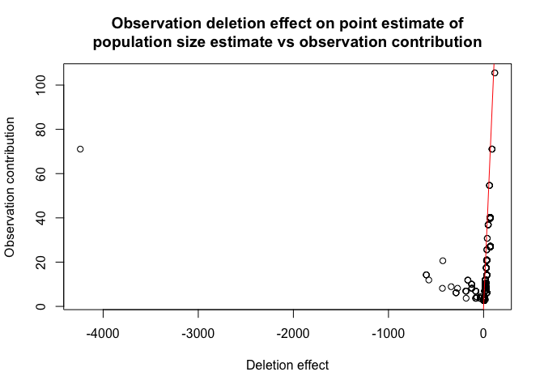
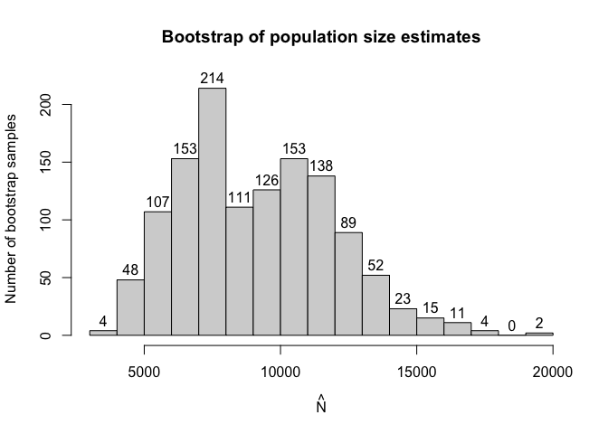

Capture-recapture type experiments are used to estimate the total population size in situations when observing only a part of such population is feasible. In recent years these types of experiments have seen more interest.
Single source models are distinct from other capture-recapture models because we cannot estimate the population size based on how many units were observed in two or three sources which is the standard approach.
Instead in single source models we utilise count data regression models on positive distributions (i.e. on counts greater than 0) where the dependent variable is the number of times a particular unit was observed in source data.
This package aims to implement already existing and introduce new methods of estimating population size from single source to simplify the research process.
Currently we’ve implemented most of the frequentist approaches used in literature such as:
- Zero truncated poisson, geometric and negative binomial regression.
- Zero truncated one inflated and one inflated zero truncated poisson and gemetric models. (Negative binomial is currently in development.)
- Zero one truncated poisson geometric and negative binomial models.
- Generalised Chao and Zelterman’s models based on logistic regression.
- Three types of bootstrap parametric, semi-parametric and non parametric.
- And a wide range of additional functionalities associated with (vector) generalised linear models relevant to the topic.
Installation
You can install the development version of singleRcapture from GitHub with:
# install.packages("devtools")
remotes::install_github("ncn-foreigners/singleRcapture")Examples
The main function of this package is estimatePopsize which fitts regression on specified distribution and then uses fitted regression to estimate the population size.
Lets look at a model from 2003 publication : Point and interval estimation of the population size using the truncated Poisson regression model Heijden, Peter GM van der et al. The call to estimatePopsize will look very simmilar to anyone who used the stats::glm function:
library(singleRcapture)
model <- estimatePopsize(
formula = capture ~ gender + age + nation + reason, # specify formula
data = netherlandsimmigrant,
popVar = "analytic", # specify
model = "ztpoisson", # distribution used
method = "IRLS" # fitting method one of three currently supported
)
summary(model) # a summary method for singleR class with standard glm-like output and population size estimation resutls
#>
#> Call:
#> estimatePopsize(formula = capture ~ gender + age + nation + reason,
#> data = netherlandsimmigrant, model = "ztpoisson", method = "IRLS",
#> popVar = "analytic")
#>
#> Pearson Residuals:
#> Min. 1st Qu. Median Mean 3rd Qu. Max.
#> -0.488779 -0.486085 -0.297859 0.002075 -0.210439 13.921578
#>
#> Coefficients:
#> -----------------------
#> For linear predictors associated with: lambda
#> Estimate Std. Error z value P(>|z|)
#> (Intercept) -1.33179 0.25486 -5.226 1.74e-07 ***
#> gendermale 0.39741 0.16305 2.437 0.014796 *
#> age>40yrs -0.97463 0.40824 -2.387 0.016969 *
#> nationAsia -1.09241 0.30164 -3.622 0.000293 ***
#> nationNorth Africa 0.18997 0.19400 0.979 0.327471
#> nationRest of Africa -0.91129 0.30097 -3.028 0.002463 **
#> nationSurinam -2.33665 1.01357 -2.305 0.021146 *
#> nationTurkey -1.67453 0.60291 -2.777 0.005479 **
#> reasonOther reason -0.01093 0.16153 -0.068 0.946048
#> ---
#> Signif. codes: 0 '***' 0.001 '**' 0.01 '*' 0.05 '.' 0.1 ' ' 1
#>
#> AIC: 1714.896
#> BIC: 1764.747
#> Residual deviance: 1128.549
#>
#> Log-likelihood: -848.4481 on 1871 Degrees of freedom
#> Number of iterations: 8
#> -----------------------
#> Population size estimation results:
#> Point estimate 12691.45
#> Observed proportion: 14.8% (N obs = 1880)
#> Std. Error 2809.508
#> 95% CI for the population size:
#> lowerBound upperBound
#> normal 7184.917 18197.99
#> logNormal 8430.749 19723.38
#> 95% CI for the share of observed population:
#> lowerBound upperBound
#> normal 10.330814 26.16592
#> logNormal 9.531836 22.29932We implemented a method for plot function to visualise the model fit and other usefull diagnostic information. One of which is rootogram, a type of plot that compares fitted and observed marginal frequencies:
plot(model, plotType = "rootogram")
The possible values for plotType argument are:
-
qq- the normal quantile-quantile plot for pearson residuals. -
marginal- amatplotcomparing fitted and observed marginal frequencies. -
fitresid- plot of linear predictor values contrasted with pearson residuals. -
bootHist- histogram of bootstrap sample. -
rootogram- rootogram, example presented above. -
dfpopContr- contrasting two deletion effects to identify presence of influential observations. -
dfpopBox- boxplot of results from dfpopsize function see its documentation. -
scaleLoc- scale-location plot. -
cooks- plot ofcooks.valuesfor distributions for which it is defined. -
hatplot- plot ofhatvalues. -
strata- plot of confidence intervals for selected su populations.
a user can also pass arguments to specify additional information such as plot title, subtitle etc. similar to calling plot on some data. For more info check plot.singleR method documentation.
As we have seen there are some significant differences between fitted and observed marginal frequencies. To check our intuition let’s perform goodness of fit test between fitted and observed marginal frequencies.
To do it we call a summary function of marginalFreq function which computes marginal frequencies for the fitted singleR class object:
summary(marginalFreq(model), df = 2, dropl5 = "group")
#> Test for Goodness of fit of a regression model:
#>
#> Test statistics df P(>X^2)
#> Chi-squared test 50.06 2 1.4e-11
#> G-test 34.31 2 3.6e-08
#>
#> --------------------------------------------------------------
#> Cells with fitted frequencies of < 5 have been grouped
#> Names of cells used in calculating test(s) statistic: 1 2 3Finally let us check if we have any influential observations. We will do this by comparing the deletion effect of every observation on population size estimate by removing it entirely from the model (from population size estimate and regression) and by only omitting it in pop size estimation (this is what is called the contribution of an observation). If observation is not influential these two actions should have the approximately the same effect:
plot(model, plotType = "dfpopContr")
it is easy to deduce from the plot above that we have influential observations in our dataset (one in particular).
Lastly singleRcapture offers some posthoc procedures for example a function stratifyPopsize that estimates sizes of user specified sub populations and returns them in a data.frame:
stratifyPopsize(model, alpha = c(.01, .02, .03, .05), # different significance level for each sub population
stratas = list(
"Females from Surinam" = netherlandsimmigrant$gender == "female" & netherlandsimmigrant$nation == "Surinam",
"Males from Turkey" = netherlandsimmigrant$gender == "male" & netherlandsimmigrant$nation == "Turkey",
"Younger males" = netherlandsimmigrant$gender == "male" & netherlandsimmigrant$age == "<40yrs",
"Older males" = netherlandsimmigrant$gender == "male" & netherlandsimmigrant$age == ">40yrs"
))
#> Observed Estimated ObservedPercentage StdError normalLowerBound
#> 1 20 932.371 2.145069 956.1229 -1530.438420
#> 2 78 1291.514 6.039425 741.1843 -432.738939
#> 3 1391 7337.175 18.958251 1281.9295 4555.271881
#> 4 91 1542.882 5.898055 782.2326 9.733753
#> normalUpperBound logNormalLowerBound logNormalUpperBound name
#> 1 3395.180 119.3464 8398.972 Females from Surinam
#> 2 3015.766 405.4748 4574.882 Males from Turkey
#> 3 10119.078 5135.1856 10834.174 Younger males
#> 4 3076.029 630.7808 3996.215 Older males
#> confLevel
#> 1 0.01
#> 2 0.02
#> 3 0.03
#> 4 0.05stratas argument may be specified in various ways for example:
stratifyPopsize(model, stratas = ~ gender / age)
#> Observed Estimated ObservedPercentage StdError normalLowerBound
#> 1 398 3811.3954 10.442370 1154.7825 1548.063241
#> 2 1482 8880.0563 16.689083 1812.6286 5327.369600
#> 3 378 3169.5475 11.925992 881.2932 1442.244687
#> 4 1391 7337.1748 18.958251 1281.9295 4824.639108
#> 5 20 641.8478 3.116003 408.1451 -158.101825
#> 6 91 1542.8815 5.898055 782.2326 9.733753
#> normalUpperBound logNormalLowerBound logNormalUpperBound
#> 1 6074.727 2188.5341 6905.147
#> 2 12432.743 6090.8584 13357.226
#> 3 4896.850 1903.7278 5485.554
#> 4 9849.710 5306.6899 10420.570
#> 5 1441.797 212.4088 2029.756
#> 6 3076.029 630.7808 3996.215
#> name confLevel
#> 1 gender==female 0.05
#> 2 gender==male 0.05
#> 3 genderfemale:age<40yrs 0.05
#> 4 gendermale:age<40yrs 0.05
#> 5 genderfemale:age>40yrs 0.05
#> 6 gendermale:age>40yrs 0.05singleRcapture package also includes the option to estimate standard error of population size estimate by bootstrap and common non standard argument such as significance levels different from usual 5%:
set.seed(123)
modelInflated <- estimatePopsize(
formula = capture ~ nation + gender + age,
data = netherlandsimmigrant,
popVar = "bootstrap",
model = "oiztgeom",
method = "IRLS",
controlMethod = controlMethod(stepsize = .2), # control parameters for regression fitting check documentation of controlMethod
controlPopVar = controlPopVar( # control parameters for population size estimation check documentation of controlPopVar
B = 1250, # number of boostrap samples
alpha = .01, # significance level
bootType = "semiparametric" # type of bootstrap see documentation for estimatePopsize
)
)
summary(modelInflated)
#>
#> Call:
#> estimatePopsize(formula = capture ~ nation + gender + age, data = netherlandsimmigrant,
#> model = "oiztgeom", method = "IRLS", popVar = "bootstrap",
#> controlMethod = controlMethod(stepsize = 0.2), controlPopVar = controlPopVar(B = 1250,
#> alpha = 0.01, bootType = "semiparametric"))
#>
#> Pearson Residuals:
#> Min. 1st Qu. Median Mean 3rd Qu. Max.
#> -0.416300 -0.416300 -0.292541 0.004086 -0.188313 13.733512
#>
#> Coefficients:
#> -----------------------
#> For linear predictors associated with: lambda
#> Estimate Std. Error z value P(>|z|)
#> (Intercept) -1.5518 0.2395 -6.480 9.19e-11 ***
#> nationAsia -0.8294 0.2573 -3.224 0.00126 **
#> nationNorth Africa 0.2082 0.1854 1.123 0.26147
#> nationRest of Africa -0.6800 0.2578 -2.638 0.00834 **
#> nationSurinam -1.5370 0.6403 -2.401 0.01637 *
#> nationTurkey -1.1880 0.4336 -2.740 0.00614 **
#> gendermale 0.3145 0.1466 2.145 0.03194 *
#> age>40yrs -0.6692 0.3116 -2.148 0.03171 *
#> -----------------------
#> For linear predictors associated with: omega
#> Estimate Std. Error z value P(>|z|)
#> (Intercept) -2.2241 0.4556 -4.882 1.05e-06 ***
#> ---
#> Signif. codes: 0 '***' 0.001 '**' 0.01 '*' 0.05 '.' 0.1 ' ' 1
#>
#> AIC: 1676.961
#> BIC: 1726.813
#> Residual deviance: 941.3779
#>
#> Log-likelihood: -829.4807 on 3751 Degrees of freedom
#> Number of iterations: 52
#> -----------------------
#> Population size estimation results:
#> Point estimate 7559.606
#> Observed proportion: 24.9% (N obs = 1880)
#> Boostrap sample skewness: 0.3109832
#> 0 skewness is expected for normally distributed vairable
#> ---
#> Bootstrap Std. Error 3194.534
#> 99% CI for the population size:
#> lowerBound upperBound
#> 4517.296 18967.029
#> 99% CI for the share of observed population:
#> lowerBound upperBound
#> 9.911937 41.617818
and for models with more than one distribution parameter we allow all parameters to be covariate dependent for exapmle if we wish to modify the model above:
modelInflated2 <- estimatePopsize(
formula = capture ~ nation + age,
data = netherlandsimmigrant,
popVar = "bootstrap",
model = "oiztgeom",
method = "IRLS",
controlMethod = controlMethod(stepsize = .2),
controlPopVar = controlPopVar(
B = 1250,
alpha = .01,
bootType = "semiparametric",
covType = "Fisher" # use fisher information matrix to construct cross covariance matrix instead of observed information matrix
),
controlModel = controlModel(omegaFormula = ~ gender) # put covariates on omega i.e. the inflation parameter
)
#> Warning in estimatePopsize(formula = capture ~ nation + age, data = netherlandsimmigrant, : The (analytically computed) hessian of the score function is not negative define.
#> NOTE: Second derivative test failing does not necessarily mean that the maximum of score function that was found numericaly is invalid since R^k is not a bounded space.
#> Additionally in one inflated and hurdle models second derivative test often fails even on valid arguments.the results are significantly different (the warning issued concerns the second derivative test for existence of local minimum, here it was inconclusive but we manually checked that fitting process found the optimal regression coefficients it’s here to provide more information to the user):

and information criteria support the second model: